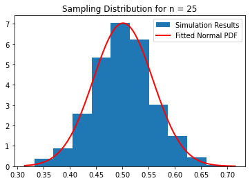
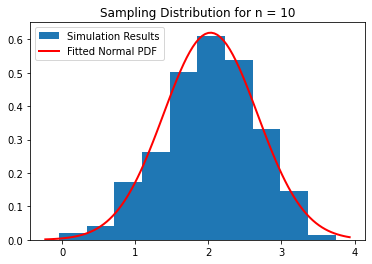

Central Limit Theorem
Contents
Central Limit Theorem¶
CBE 20258. Numerical and Statistical Analysis. Spring 2020.
© University of Notre Dame
Learning Objectives¶
After studying this notebook, attending class, completing the home activities, and asking questions, you should be able to:
Define statistical inference to a freshman engineer. Give two science or engineering examples.
Explain the central limit theorem.
Use the central limit theorem to calculate probabilities involving the sample mean. Do this with and without standardizing. (Two approaches, same answer.)
# load libraries
import scipy.stats as stats
from scipy.stats import norm
import scipy as sp
import numpy as np
import math
import matplotlib.pyplot as plt
import random
Central Limit Theorem¶
Further Reading: §4.11 in Navidi (2015)
The Central Limit Theorem (CLT) is the mathematical foundation for almost all of the statistical inference tools we will study this semester.
Let \(X_1\), …, \(X_n\) represent a simple random sample from the population with mean \(\mu\) and variance \(\sigma^2\).
Key Insight: We will use probability to model generating a sample. Each datum is a realization of the random variable \(X\).
Likewise, the sample mean is a random variable:
The CLT says that sample mean converges to the normal (Gaussian) distribution with mean \(\mu\) and variance \(\frac{\sigma^2}{n}\) as \(n \rightarrow \infty\):
Key Insights:
The CLT holds irregardless of the probability distribution (\(\sigma^2 \leq \infty\)) of the population (i.e., individual samples).
\(\sigma^2\) is the variance of the population distribution.
Class Activity
Answer the following conceptual questions with a partner.
Conceptual Questions:
Explain the difference between the population distribution and sample mean distribution.
What happens to the variance of \(\bar{X}\) when \(n\) increases. Why does this make sense?
Numerical Illustrations of Central Limit Theorem¶
A common “right of passage” in a rigorous statistics course is to mathematically prove the central limit theorem holds. Instead, we will use simulation with a random number generator to demonstrate the CLT holds.
Samples from Uniform Distribution¶
Let’s first consider the case where the samples are drawn from a uniform distribution defined over [0, 1].
def uniform_population(n,LOUD=True):
''' Simulate samples of size n from standard uniform distribution
Arguments:
n - number of datum in each sample
Returns:
None
'''
# number of times to repeat sampling procedure
Nsim = 1000
# preallocate vector to store results
sample_means = np.zeros(Nsim)
# simulate sampling Nsim number of times
for i in range(0,Nsim):
# generate n samples from uniform distribution
for j in range(0,n):
sample_means[i] += random.random()
sample_means[i] *= 1/n
plt.hist(sample_means,density=True,label="Simulation Results")
plt.title('Sampling Distribution for n = {}'.format(n))
xbar = np.mean(sample_means)
var = np.var(sample_means)
# Fit a normal distribution to the data
mu, std = norm.fit(sample_means)
# Plot the PDF.
xmin, xmax = plt.xlim()
x = np.linspace(xmin, xmax, 100)
p = norm.pdf(x, mu, std)
plt.plot(x, p, linewidth=2,color="red",label="Fitted Normal PDF")
plt.legend()
plt.show()
if LOUD:
print("Calculated average of sample means:\t",xbar)
print("\nCalculated variance of sample means:\t",var)
# variance of [0, 1] uniform distribition
var_uniform = 1/12
# predict variance based on sample CLT
print("Predicted sample distribution variance:\t",var_uniform/n)
# fitted variance
print("Fitted sample distribution variance:\t",std**2)
return None
uniform_population(25)

Calculated average of sample means: 0.5011296819386155
Calculated variance of sample means: 0.0031652850768537745
Predicted sample distribution variance: 0.003333333333333333
Fitted sample distribution variance: 0.0031652850768537745
Activity. With a partner, answer the following questions.
What happens when \(n = 1\)? Explain why the histogram looks the way it does.
For this example, how large does \(n\) need to be for the CLT approximation to be reasonable?
Samples from Bimodal Distribution¶
Now let’s consider the example where \(X\) is drawn from a bimodal distribution. For example, we want to draw
75% of the time and the other 25% of the time draw the samples as follows:
In the code below, we use random.gauss https://docs.python.org/3.4/library/random.html#random.gauss
Class Activity
Explain the code below to your neighbor.
def bimodal_population(n,LOUD=True):
''' Simulate samples of size n from standard uniform distribution
Arguments:
n - number of datum in each sample
Returns:
None
'''
# number of times to repeat sampling procedure
Nsim = 1000
# preallocate vector to store results
sample_means = np.zeros(Nsim)
# simulate sampling Nsim number of times
for i in range(0,Nsim):
# generate n samples from bimodal distribution
for j in range(0,n):
if random.random() < 0.75:
sample_means[i] += random.gauss(3,1)
else:
sample_means[i] += random.gauss(-1,math.sqrt(0.5))
sample_means[i] *= 1/n
plt.hist(sample_means,density=True,label="Simulation Results")
plt.title('Sampling Distribution for n = {}'.format(n))
xbar = np.mean(sample_means)
var = np.var(sample_means)
# Fit a normal distribution to the data
mu, std = norm.fit(sample_means)
# Plot the PDF.
xmin, xmax = plt.xlim()
x = np.linspace(xmin, xmax, 100)
p = norm.pdf(x, mu, std)
plt.plot(x, p, linewidth=2,color="red",label="Fitted Normal PDF")
plt.legend()
plt.show()
if LOUD:
print("Calculated average of sample means:\t",xbar)
print("Calculated variance of sample means:\t",var)
print("Calculated median of sample means:\t",np.median(sample_means))
return None
Class Activity
Discuss the following questions with a partner:
What does the histogram look like with \(n=1\)? Why does this make sense? Why are the mean and median different?
For this example, how large does \(n\) need to be for the CLT approximation to be reasonable?
bimodal_population(10)

Calculated average of sample means: 1.9883126123637365
Calculated variance of sample means: 0.43141058700684176
Calculated median of sample means: 2.0347535470678064
CLT Illustrative Example: Membrane Defects¶
Let \(X\) denote the number of defects in 1 cm\(^2\) patch of membrane. The probability density function of \(X\) is given in the following dictionary:
pmf = {0:0.60, 1:0.22, 2:0.13, 3:0.04, 4:0.01}
total = 0
for i in pmf.keys():
print("Probability of {} defects is {}".format(i,pmf[i]))
total += pmf[i]
print("\nSanity check. Probabilities sum to",total)
Probability of 0 defects is 0.6
Probability of 1 defects is 0.22
Probability of 2 defects is 0.13
Probability of 3 defects is 0.04
Probability of 4 defects is 0.01
Sanity check. Probabilities sum to 1.0
For simplicity, we will assume \(P(X \geq 5) = 0\).
We sample one 1 cm\(^2\) patch of membranes from this population.
What is the probability the average number of defects per patch will be 0.5 or smaller for this sample?
Expected Value of Defects¶
We can compute the expected number of defects using a formula from last week.
# expected number of defects
ev = 0
# loop over outcomes
for i in pmf.keys():
ev += pmf[i]*i
print(ev)
0.64
Variance of Defects¶
# compute expected value of x^2
evx2 = 0
for i in pmf.keys():
evx2 += pmf[i]*i*i
# compute variance
var = evx2 - ev**2
print(var)
0.8504
Standard Deviation of Number of Defects¶
print(math.sqrt(var))
0.9221713506718803
Probability¶
Recall the CLT tells of the mean (average) number of defects per patch is normally distributed:
You calculated \(\mu\) and \(\sigma^2\) already. Now we just need to calculate:
We can do this using the cumulative distribution function for \(\mathcal{N}(\mu, \frac{\sigma^2}{n})\).
sp.stats.norm(ev, math.sqrt(var)).cdf(0.5)
0.4396661875447759
Python Trick: Most textbooks write the normal distribution as \(\mathcal{N}(\mu,\sigma^2)\) where the second argument is variance. The collection of function available scipy.stats.norm specify standard deviation as the second argument. These opposing conventions are unfortunate, but all too common. When in doubt, always check the documentation. https://docs.scipy.org/doc/scipy/reference/generated/scipy.stats.norm.html#scipy.stats.norm